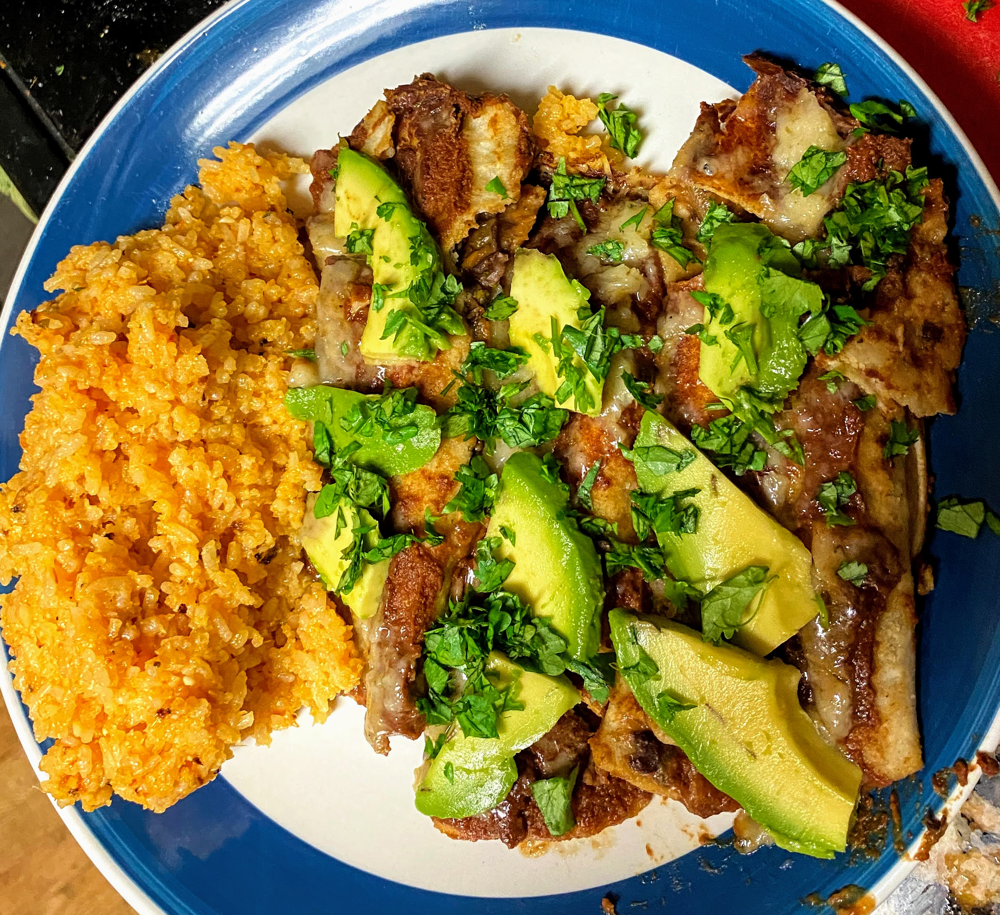

Ingredients:
| Amount | Ingredient | |
|---|---|---|
| 1 tablespoon | Oil | |
| 1 | Onion, chopped | |
| 2 cloves | Garlic, minced | |
| 3 tablespoons | Chili Powder | |
| 2 teaspoons | Cumin | |
| 2 cups | Black Beans | |
| 1 teaspoon | Salt | |
| 2 cups | Tomato puree or 1 can 15 oz tomato sauce + 1/2 cup water | |
| 1/2 cup + 1 tbs | Chopped fresh cilantro | |
| 1 | Medium jalapeño, chopped | |
| 8 oz | Vegan cheese | |
| 12-14 | 5.5 inch tortillas |
Instructions:
| 1. | Heat oil in a sauté pan over medium heat. Add onion and garlic to cook until soft and fragrant, about 3 minutes. Add the chili powder, cumin powder, and salt. Cook another 2 minutes. Add the beans and tomato puree and bring to a boil. Turn the heat to low and simmer 5 minutes. | |
| 2. | Remove the bean mixture from the heat and strain, reserving the sauce. Transfer the strained bean mixture to a medium bowl and mix together with 1/2 cup cilantro, jalapenos, and 4 oz of cheese. | |
| 3. | Preheat oven to 350 F. | |
| 4. | Spread 1/2 cup of the sauce in the bottom of the baking dish. Microwave 5 tortillas at a time or follow the package instructions to soften. Scoop about 1/4 cup bean mixture into each tortilla and roll it up tightly. Place the filled and rolled tortillas in the baking dish seam-side down. Finish all tortillas. | |
| 5. | Dip the pastry brush in the sauce and brush the ends of each tortilla. Pour the remaining sauce evenly over the enchiladas. | |
| 6. | Sprinkle the remaining cheese over the top of the enchiladas, cover the baking dish with aluminum foil. Bake for 20 minutes. Remove the foil, bake for additional 2-3 minutes until the cheese is slightly brown. | |
| 7. | Garnish with the remaining cilantro before serving. |